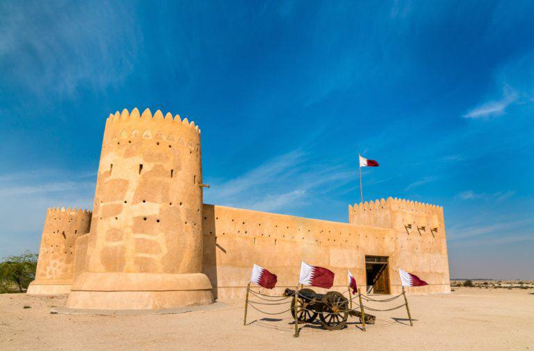

منطقة الزبارة الأثرية- قطر

من المستحيل أن تجد بقعة علي أرض الوطن العربي الا
ولها قصة ترويها . موقع الزبارة الأثري هو المعني الحقيقي
للأصالة و التاريخ :ولعل هذا ما جعله مصنفا ضمن قائمة
التراث العالمي لليونسكو . بالتالي هو أحد أهم المعالم السياحية
التي ينبغي عليك التوجه اليها عند زيارتك لقطر
يمكنك القيام بعدة أنشطة مثل زيارة القلعة وركوب
الجمل